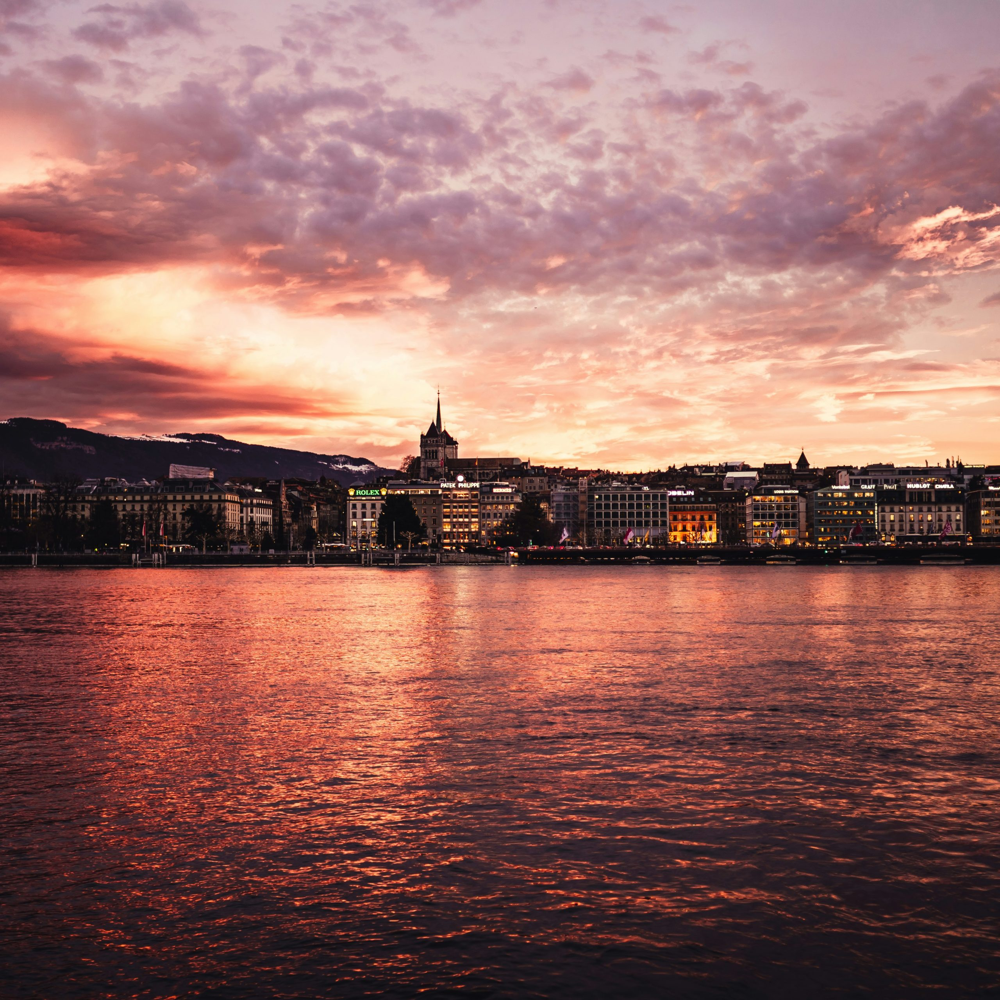

Concours & ateliers
Écriture, cuisine, cinéma et ateliers thématiques pour vivre la langue par la création.
Au-delà de l’apprentissage, l’Alliance Française de Genève est un carrefour de cultures et d’échanges.

Notre programmation crée des occasions de pratiquer le français dans un cadre convivial et stimulant.
Écriture, cuisine, cinéma et ateliers thématiques pour vivre la langue par la création.
Rencontres littéraires, échanges d’idées et rendez-vous avec les cultures francophones.
Escapades culturelles, patrimoine genevois et moments de convivialité dans la région.
Partagez des moments de découverte, rencontrez la communauté et vivez la francophonie à Genève.